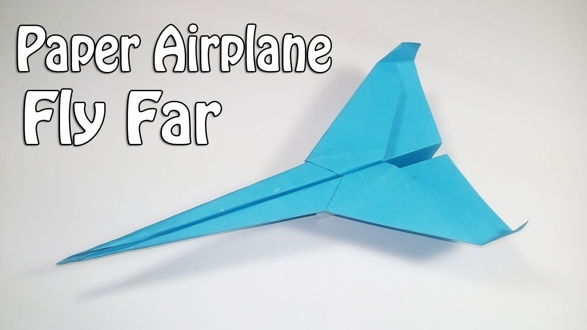
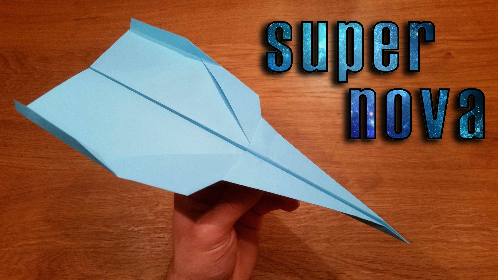
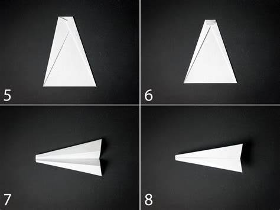
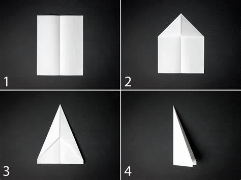
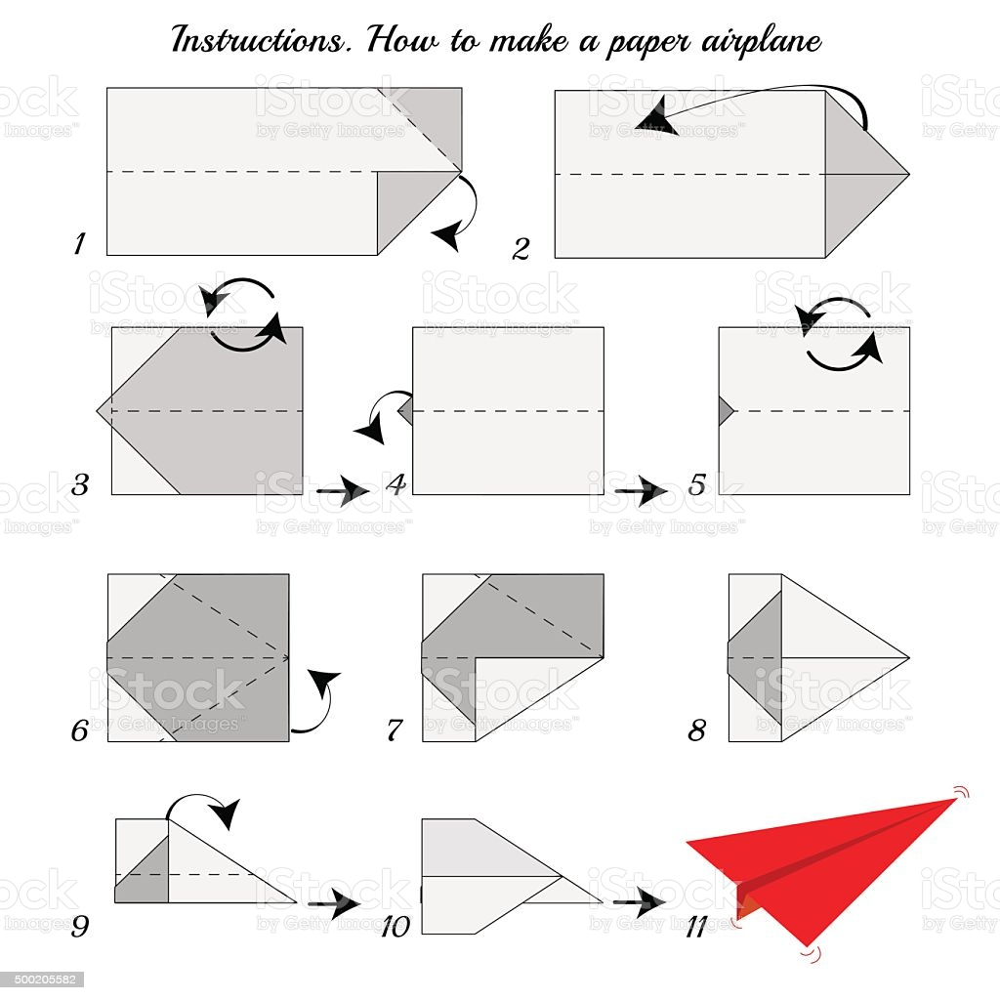
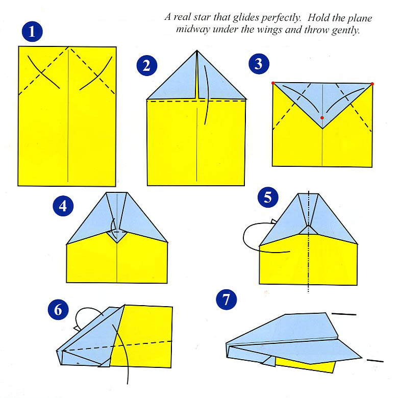

How To Make Cool Paper Planes Step By Step

AstroBrights Paper Airplanes!

Simple paper airplane instructions printable

DESIGN CONTEXT: How to//Paper plane

Origami airplane instructions - Bilingual Kidspot

How do planes fly? - WELCOME TO MR.FLEMING SCIENCE

Origami Airplane Instructions | Free Printable Papercraft ...

How to make paper airplanes - 13 Pics | Curious, Funny Photos / Pictures

How to Make a Paper Airplane That Flies Far | Fab How

Pin on Paper Planes
- 
How To Make Paper Airplanes That Fly - Easy Paper Plane
- 
How To Make a Paper Airplane That Flies Far, Supernova
- 
How to Make a Paper Airplane | HGTV
- 
How To Make Cool Paper Airplanes | MyCoffeepot.Org
- 
Instructions How To Make Origami Paper Airplane stock vector art ...
- 
Real Madrid King Food Ball: How To Make A Paper Airplane